Rete Business AngelSe hai relazioni, competenze o esperienza che possono servire a una startup — anche senza mettere capitale — questo è il posto giusto per farti conoscere.
Perché
Per questo abbiamo aperto un canale più semplice: non un profiling da investitore, ma un modo per farti conoscere e scegliere tu, startup per startup, se e come partecipare.
Come funziona
Compili un form breve: chi sei, cosa sai fare, cosa potresti mettere a disposizione.
Periodicamente ricevi le startup del network in cerca di supporto. Scegli tu quelle che ti interessano.
Una call con la startup e, se procedete, Imment struttura l'accordo — SFP/SAFE se metti capitale, vesting se metti lavoro.
Cosa ottieni
Vedi le startup, decidi tu se e quando farti avanti.
Le startup del network vedono il tuo profilo quando cercano proprio il tuo tipo di contributo.
Capitale, relazioni, competenze o tempo: l'accordo si adatta a cosa porti.
Se c'è fit, Imment gestisce la parte legale e contrattuale — SFP, SAFE o vesting.